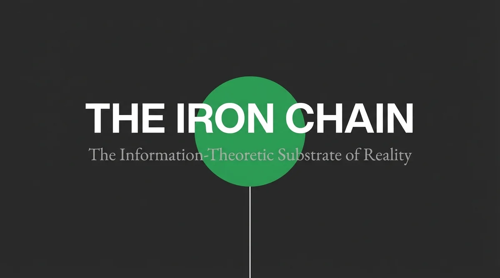
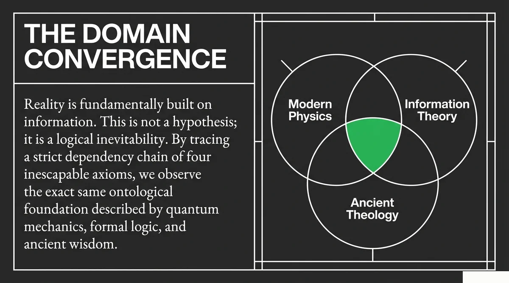
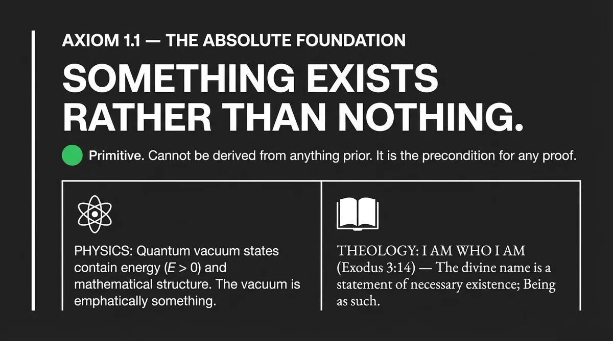
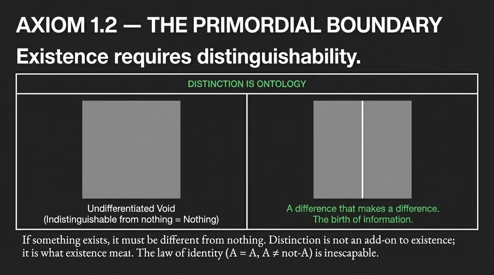
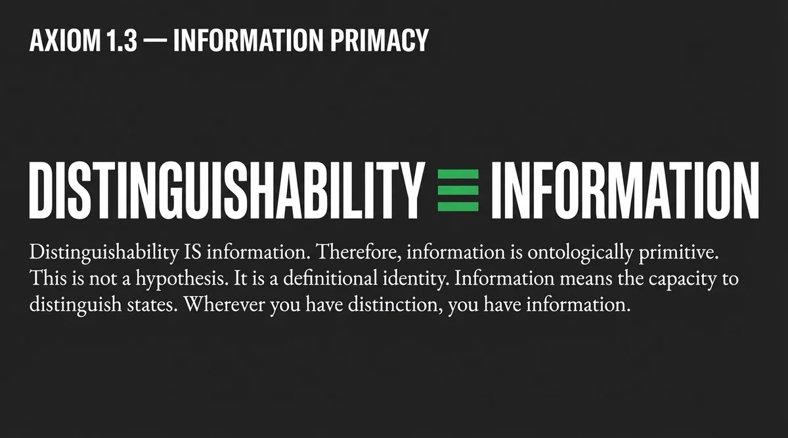
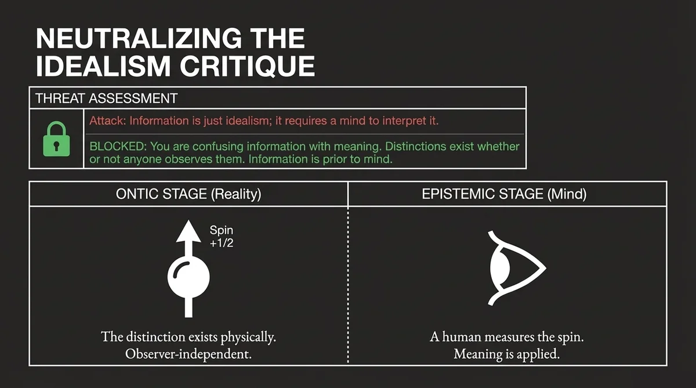
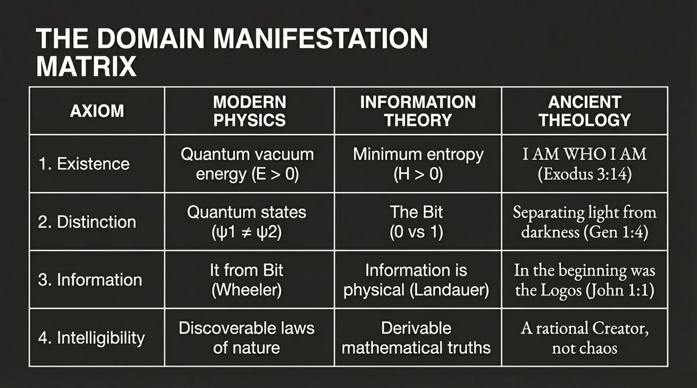
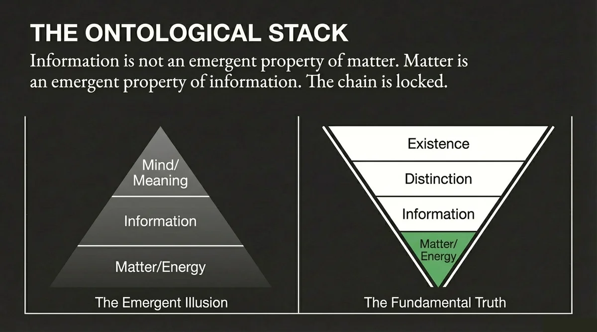

This is the article I've been most afraid to write. Not because the answer is unclear — the answer has been sitting in plain view for sixteen centuries. I've been afraid because the question is one of the most painful in Christianity, and most of the answers people give to it have made the pain worse. I'm not going to tell you the hard passages aren't hard. They are hard. I'm going to do something else first. I'm going to take you to 1400 BC and make you stand in the dirt for a few minutes, because every honest answer to the OT/NT problem has to start there.

Part One: The Dirt
It is late afternoon in the southern Levant. The air smells like woodsmoke and sun-baked mud and, faintly, the metallic tang of blood from the morning's animal slaughter. You are standing on a footpath outside a walled village. There is no police station. There are no courts. There is no hospital. There is no hospital because there are no doctors, and there are no doctors because there is no germ theory and no antibiotics and no anesthesia and the closest thing to a medical professional in your village is the woman who knows which herbs to chew and which to spit out.
You are not from here. You came from the future. You are wearing the Western armchair you carried with you, and from inside that armchair you have always wondered why the God of the Old Testament was so harsh. You are about to find out that you were asking the wrong question.
The first thing you notice is the children. Or rather, the absence of children. You should be seeing twenty or thirty children running between the houses, but you are seeing eight. Of every ten infants born in this village, three will die before their first birthday. Five will be dead before they reach the age of fifteen. The mother of the household nearest the path has buried four of her six children. Her face does not look like the face of a woman in grief. It looks like the face of a woman doing math.
The second thing you notice is the smell of the pond at the edge of the village. It is the source of the village's drinking water. Two-thirds of everyone in this village is carrying a parasitic infection from that water. One in five has malaria. One in ten has leishmaniasis. None of them know what is making them sick. They know only that the gods are angry, or that a demon called Lamashtu has crawled into the village again, or that someone in the next village over has cursed them.

The third thing you notice happens at sundown. You hear drums. The man you are walking with says the drums are for Molech. He says it is because of the drought. He says they have already lost half their barley crop and the priests have been telling the village for a month that something has to be done.
What the drums are for is to drown out the screaming. The Hebrew word for drum is toph. The site where the sacrifice happens is called the tophet. Archaeologists in the twentieth century will excavate the tophets at Carthage and find twenty thousand urns containing the cremated remains of infants. Plutarch describes the bronze statue with sloped hands. The drums beat the entire time. They beat so the parent cannot hear the child. They beat so the parent cannot change their mind.
The man you are walking with is not a monster. He is a father with three living children. By his lights, his sister-in-law was being heroic when she brought her newborn to the priest. By her lights, she was a good mother. By your lights, from inside your Western armchair, you do not have the vocabulary for what she did.
You walk further. The path forks. The left fork goes to a village that was raided last month by a group called the Habiru. The local king has written letter after letter to the Pharaoh asking for soldiers, and the Pharaoh has sent nothing. The right fork goes to a different village where last week, a man from your village killed a man from theirs over a goat. The dead man's brother is now obligated by every code of honor known to the region to come and kill your man. The killings will not stop until one of the clans is too weak to continue. This is the default justice system of the world.
You came here with the question why was God so mean in the Old Testament. Sitting on a low wall at sundown, watching the smoke rise from the tophet in the next valley, you understand for the first time that He was not. The world He was talking to is the world you are sitting in. You no longer want to know why God was so mean. You want to know how He got anyone to stop sacrificing their children.
You want to know how somebody built a house of mercy inside a world of pandemonium.

Part Two: The Two Verses You Were Brought Up On
“For I the Lord do not change.” — Malachi 3:6
“Jesus Christ is the same yesterday and today and forever.” — Hebrews 13:8
The Old Testament writer says God doesn't change. The New Testament writer says Jesus doesn't change. Both writers know what's in their Bible. Both have read the conquest of Canaan and the Sermon on the Mount. Both state, without hedging, that the Person behind both is the same Person.
For most of Christian history, that claim has been an act of faith more than an act of reason. The honest believer reads Numbers 31 and then reads John 8 and feels something break. Not their faith — their ability to explain their faith to anyone who asks the obvious question.
The Four Answers That Don't Work
When someone asks the OT/NT question seriously, they tend to get one of four answers. Each one captures something true. None of them holds the whole thing.
The atheist's answer: God is not actually good. Clean, logically consistent, refreshingly honest. Fatal problem: to call the conquest immoral, you need a moral framework. If atheism is true, the moral sense you're using is an evolutionary accident with no binding force. You can't borrow the standard from the system you're trying to refute.
The reinterpretation move: we're misreading the text. Captures something real — context matters. Hidden cost: it works for some passages and not all. Once you've established interpretive permission to dispose of parts you don't like, you've established the principle by which someone else can dispose of the parts you do.
The sovereignty appeal: God operates on a different moral scale. Real weight behind it — scale differences are real. Pushed to the limit, becomes a blank check. If "good" means "whatever God does," the word loses content.
The progressive revelation move: God entered a violent world and started moving it toward better. Captures something real — the trajectory is there and never reverses. Leaves a question hanging that it can't address: why so slow? Why fifteen centuries?
Four answers. Four genuine partial truths. None of them holds all the weight.

What All Four Answers Are Really Trying To Solve
Step back and look at what every one of those answers is trying to do. They're all trying to resolve the same underlying tension:
How can the same Person be perfectly just AND perfectly merciful AND preserve human freedom — at the same time, in the same world, without any of the three collapsing into the other two?
Every answer above is an attempt to relax one of those three constraints to make the others fit. Each move resolves the tension by sacrificing something. None of them holds all three constraints simultaneously.
But what if you didn't have to sacrifice any of them? That would be the answer the church has been looking for since Marcion. The account exists. It just wasn't available until the mathematics caught up.
One Equation, Three Terms, No Contradiction
Earlier in this series we wrote down the equation that governs how a soul moves into or away from coherence with God:
$C$ is coherence — alignment with God, ranging from total alignment at 1 to total decoherence at 0. The right-hand side has three terms doing three different things. $O$ is openness, the human variable, the willingness to receive. $G$ is grace, the divine input, the negentropic energy that flows from God into the system. $S$ is entropy, the decay term, the cost of living in a fallen universe.
Now look at what those three terms are in moral language.
The $S \cdot C$ term is justice. It's not punishment in the sense of God being angry. It's the structural fact that coherence loss has consequences. Sin damages the coherence state of the system that commits it, the same way friction degrades a moving part regardless of whether the engineer is upset about it. The whole "wrath of God" language in the prophets is describing the $S \cdot C$ term operating in real time on a population that has been accumulating decoherence for generations.
The $G$ term is mercy. Grace is the negentropic input that has to be there for the equation to go anywhere except down. Without $G$, the equation reduces to $dC/dt = -S \cdot C$, pure exponential decay. The system dies. So if you read the Old Testament and you see anyone, anywhere, surviving — Noah on the ark, Rahab in Jericho, the remnant after the exile, the line of Abraham preserved through famine and slavery and idolatry and four centuries of silence — you are looking at the $G$ term operating. Grace was never withdrawn. Not once. The New Testament didn't introduce grace. It unveiled what had been operating the entire time.
The $O$ term is free will. Openness is the human side of the equation, the variable the person sets, the willingness to receive. The growth term is multiplicative — $O \times G \times (1-C)$. Both have to be nonzero for growth to occur. God provides $G$. The person provides $O$. Neither alone is sufficient. Take $O$ out and salvation becomes a divine override that turns humans into puppets. Take $G$ out and salvation becomes a self-help project that the dead can never initiate.
Three terms. Three constraints. Held simultaneously. No contradiction.

Slavery, Stoning, Conquest
The fastest way to test whether a framework is real is to walk it through the hardest cases. Now that you have stood in the dirt of 1400 BC, walk through them with me.
Slavery. The OT regulates slavery; it does not abolish it. From inside the Bronze Age you know that "slavery" was the safety net — the only-thing-keeping-the-children-alive sense. The framework's answer is that the regulation is the mercy term, operating under the constraint that the free will term cannot be set to zero. So God sets a floor. The Mosaic provisions are unprecedented: mandatory release in the seventh year, freed servants sent off "furnished liberally," prohibition on returning runaways (Deut 23:15–16), freedom for a single tooth (Exodus 21:26–27), universal Sabbath rest. The floor was set above the surrounding norm and then raised. By Galatians 3:28 the floor has risen high enough that slavery has no theological justification left.
Stoning. The Mosaic law prescribes death for certain offenses, but the prescription and the execution are two different things. Capital cases required two or three witnesses. Circumstantial evidence was inadmissible. False testimony in a capital case carried the same penalty as the crime. The Mishnah says a Sanhedrin that executed even one person in seventy years was called a bloody court. The Mosaic Law also introduced the Cities of Refuge — six cities where someone who had killed accidentally could flee until a trial could distinguish murder from manslaughter. The concept of mens rea was a Mosaic innovation, in 1400 BC.
Conquest. The hardest one. Justice ($S \cdot C$) says the practice has consequences. Mercy ($G$) says God waited four hundred years — Genesis 15:16 explicitly says the conquest would wait until "the iniquity of the Amorites is complete." Free will ($O$) says they chose. They chose for four hundred years. And there's a fourth consideration: the protection of the signal chain. If Israel adopted Canaanite practices, the covenant signal becomes corrupted. The conquest was not God's preferred option. It was the option that remained after four hundred years of mercy had failed and the signal chain was at risk.
I'm not saying the conquest was easy or clean. I'm saying the action God took held all three constraints under conditions where the alternative was the loss of the entire signal chain for the entire species. The math doesn't make the suffering smaller. It makes the suffering legible. And legibility is the difference between a God you can wrestle with and a God you can only flee from.
Women. Mosaic protections for women exceeded every surrounding culture by a wide margin. Zelophehad's daughters in Numbers 27 establish the principle that women can inherit — a precedent that did not exist anywhere else in the ancient Near East. Divorce protections. Rape laws that punished the perpetrator rather than the victim. The floor was set above the surrounding norm and raised across millennia until "in Christ there is neither male nor female."

Why So Slow
The progressive revelation answer was right that there's a trajectory. It just couldn't explain the pace. The pace is the place where the equation does its hardest work.
You felt this in Part One. The pace was set by the world. You cannot drop the Sermon on the Mount into a world of fifty percent infant mortality, parasitic disease, collapsed states, and child sacrifice as a survival ritual and have it land. The vocabulary doesn't exist. The conceptual scaffolding hasn't been built. A premature attempt would be cruel, because the species would experience constant failure at a task that was beyond it by definition.
Imagine you're trying to teach calculus to a four-year-old. You can't start with derivatives. You have to start with counting. Then addition. Then subtraction. Then multiplication. Then fractions. Then variables. Then functions. Then you can begin to talk about how a function changes.
Now imagine that the thing you're trying to teach is not calculus. The thing you're trying to teach is love. The full thing — sacrificial, covenantal, enemy-loving, forgiveness-extending love. Before you can teach that, the student has to know what good and evil are, what neighbor means, what self means, what God is. The world is full of small, capricious, demanding gods who behave nothing like the God who is actually trying to introduce Himself. So before you can teach love, you have to spend centuries on a single curriculum item: "I am NOT like those other gods."
That's the Old Testament. It is the curriculum on what God is not.
When Jesus arrives and summarizes the entire law in two commandments — love God, love neighbor — He is delivering the graduation speech for a curriculum that took fifteen centuries.

The Convergence Point
There is one event in all of history where the three constraints are visible simultaneously, in a single act, with no possibility of confusion. The event is the Cross.
Justice is there. Someone has to pay for the accumulated decoherence of the species. The cost is not symbolic. The thermodynamic equivalent of erasing every sin ever committed is finite, large, and real, and it is paid in blood by the only Person whose energy budget is infinite. The $S \cdot C$ term gets balanced to zero by an external input that absorbs the entire accumulated load.
Mercy is there. The Person who pays is the Person who was offended. The grace term is not separate from the justice term in this event — they are the same act, performed by the same Person, simultaneously. God absorbs the cost of His own justice rather than charge it to the offenders.
Free will is there. The Cross does not impose itself on anyone. The door opens from inside. You have to receive what's been done for you. The $O$ variable stays nonzero because if it didn't, the entire equation collapses into divine puppetry.
All three terms. One event. No contradiction. Same God who appeared to be three different things in three different phases of the curriculum, now visible as one Person performing all three operations at once, in the same place, in the same hour.

Same Patient, Same Doctor, Different Phase
The Old Testament and the New Testament are not two religions stitched together. They are the diagnostic phase and the treatment phase of one continuous course of care.
In the diagnostic phase, the doctor's job is to tell the patient the truth about what's wrong. This is the phase where the language is hard. The Old Testament is God in diagnostic mode. The $S \cdot C$ term is loud in the narrative because $S$ is what has to be named before it can be addressed.
In the treatment phase, the doctor's job is to administer the cure. The language changes. The cancer hasn't gotten less serious; the doctor isn't lying about the diagnosis. But the emphasis shifts from naming the disease to delivering the medicine. The $G$ term comes forward in the narrative because $G$ is what the diagnosed patient needs to actually receive.
A patient who has not been told they have cancer cannot meaningfully accept chemotherapy. The diagnosis has to land before the treatment can be received. Sixteen centuries of prophets, fifteen centuries of law — that's the diagnostic phase finishing its work. When John the Baptist appears in the wilderness and says "repent," the patient is finally ready to hear the doctor. Three years later the cure goes on the table.
The One-Sentence Version
That sentence is the entire article. If the framework is right, the OT/NT problem is not a contradiction that requires faith to ignore. It is a single equation operating across two phases of one curriculum, taught by one Person, aimed at one outcome. The Person didn't change. The vocabulary did. The students finally caught up.
We are finite minds reasoning about infinite God. Every model is projection of higher-dimensional reality onto lower-dimensional surface we can comprehend. We do not claim to have captured God in equations. We claim that when we look at His creation honestly — with the tools of physics and the revelation of Scripture — the same structure appears in both. Where our model limits what God can be, the limitation is ours, not His. We offer this work as worship, not as containment.